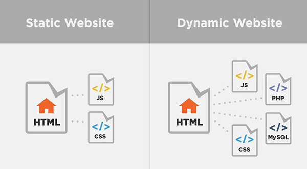

Poštovani posetioče
Aplikacija „Obuka progrmaskih jezika“, pretstavlja virtuelni pocetnik osnova
programskih jezika: HTML, CSS i JavaScript. Tokom obuke i rada, dešava se da
zaboravimo određenu sintaksu. Rešio sam da spojim lepo i korisno, i sve najčešće
korišćene pojmove koje se tiču navedenih jezika, da stavim na jendo mesto, u
jednu aplikaciju, ujedno vežbajući te jezike dok kreiram aplikaciju koju ću
svakako koristiti u budućnosti. Ukoliko pomogne i vama, time je moja sreća
još veća!
